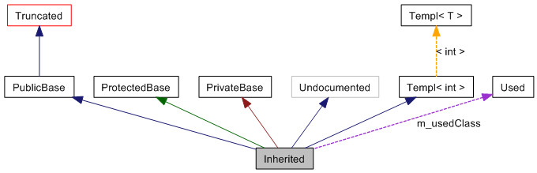

このページでは、doxygen で生成されたグラフをどのようにみたらよいかを説明します。
次の例を考えてみます。
class Invisible { };
class Truncated : public Invisible { };
class Undocumented { };
class PublicBase : public Truncated { };
template<class T> class Templ { };
class ProtectedBase { };
class PrivateBase { };
class Used { };
class Inherited : public PublicBase,
protected ProtectedBase,
private PrivateBase,
public Undocumented,
public Templ<int>
{
private:
Used *m_usedClass;
};
設定ファイル中で、タグ MAX_DOT_GRAPH_HEIGHT が 200 にセットされた場合、次のようなグラフとなります。

上のグラフ内のボックスには次のような意味があります。
-
黒く塗りつぶされたボックスは、このグラフに対応する構造体やクラスを表します。
-
黒枠のボックスはドキュメントがある構造体やクラスを表します。
-
灰色の枠のボックスはドキュメントがない構造体やクラスを表します。
-
赤枠のボックスはドキュメントがある構造体やクラスを表しますが、指定されたサイズに収まらないために継承・包含関係をすべて図示することができなかったことを示します。
矢印には次のような意味があります。
-
青い矢印は二つのクラス間の public 継承関係を示します。
-
緑の矢印は protected 継承関係を示します。
-
赤の矢印は private 継承関係を示します。
-
紫の破線矢印は、そのクラスが他のクラスに含まれていたり、利用されていることを示します。また、矢印が指しているクラスや構造体をどの変数でアクセスできるかを矢印のラベルとして示しています。